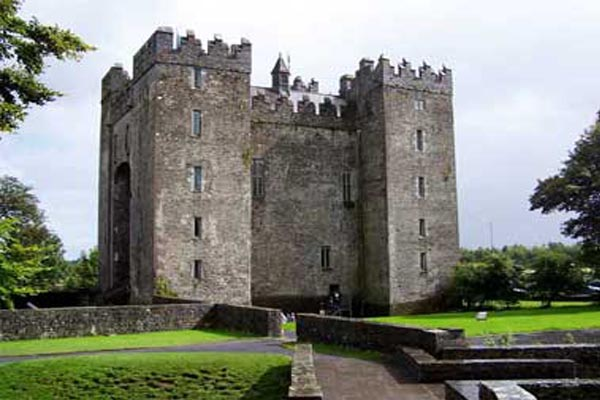
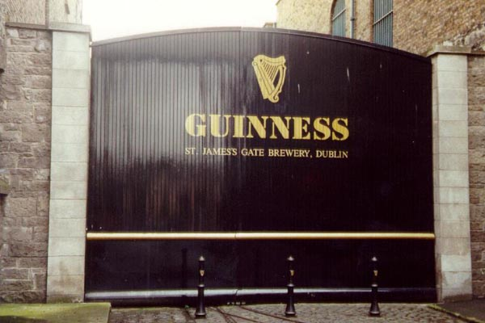
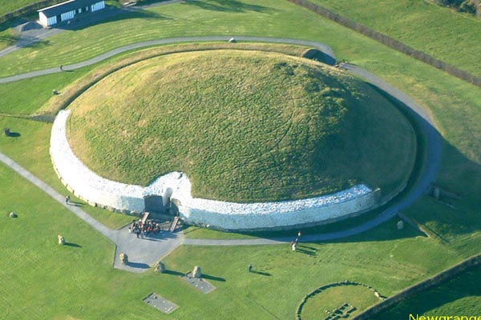
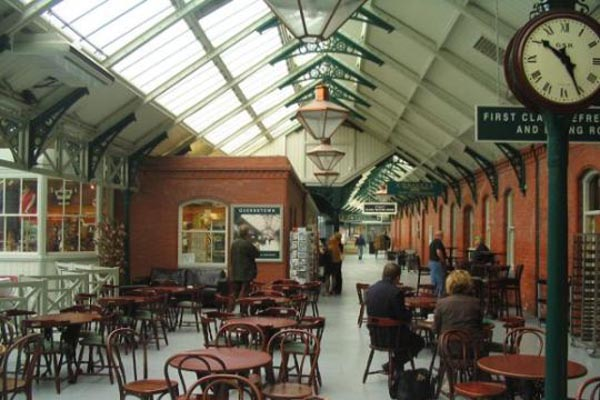

Ireland enjoys mild temperatures in the Winter, and although it can rain, there are plenty of indoor sights still to visit regardless of weather. Catch a medieval experience at Bunratty Castle, enjoy a fresh pint of guinness on a tour of the Guinness Brewery, visit the Titanic Exhibition at the ship's last port of call in Cobh, and don't miss out on the winter solstice at the megalithic tomb at Newgrange.

Bunratty Castle and Folk Park
A visit to County Clare should always include a trip to Bunratty Castle and the adjoining Folk Park.
The castle, built in 1425, was restored in 1954 to its former medieval splendour and houses the Bunratty Collection: 450 pieces of
medieval furniture and artifacts.
At night time the castle is the impressive setting for its popular medieval banquets, held year round.
Within the grounds is the folk park, where 19th-century life is vividly recreated. Set on 26 acres, the impressive park features over
30 buildings, including a schoolhouse, post office and doctors house in a living village setting.
Bunratty Folk Park also includes Ardcroney Church, a former Church of Ireland building which was painstakingly moved, stone
by stone, from County Tipperary to Bunratty.
Link to Discover Ireland website for more info

Guinness Brewery
The Guinness Storehouse is located in the heart of the St James's Gate Brewery in the centre of Dublin, which has been home to the 'black stuff' since 1759.
The highlight for many visitors is the Gravity Bar, where they collect their end of tour pint of Guinness and can relax and enjoy
the 360 degree views across Dublin City.
The seven storey building, a former Guinness fermentation plant, has been remodelled into the shape of a giant pint of Guinness.
A visit will teach you everything you ever wanted to know about this world famous beer, from how Guinness is made, to the ancient craft of Guinness
barrel making in the cooperage and on to the creation of the world famous brand.
Link to Discover Ireland website for more info

Newgrange
All admissions to Newgrange and Knowth are through the Bru na Boinne Visitor Centre, in Donore, County Meath. The Megalithic Passage Tomb at Newgrange was built about 3200 BC.
The 19 metre long inner passage leads to a cruciform chamber with a corbelled roof.
There is a roof-box opening to allow sunlight to penetrate the passage and chamber at sunrise around the Winter Solstice.
The passage and chamber of Newgrange are illuminated by the winter solstice sunrise. A shaft of sunlight shines through the roof box over the
entrance and penetrates the passage to light up the chamber. The dramatic event lasts for 17 minutes at dawn on the Winter Solstice and for a few
mornings either side of the Winter Solstice.
The visitor centre also has an exhibition that includes a full scale replica of the chamber at the World Heritage Site of Newgrange,
as well as a full model of one of the smaller tombs at Knowth.
Link to Discover Ireland website for more info

Titanic Exhibition
The story of the Titanic has captured the hearts and minds of millions. From descendents
of crew and passengers, to the just plain fascinated, the story has been re-told over and over from Belfast to Hollywood.
The Titanic Experience Cobh exhibition is housed in the original White Star Line building in Cobh, the site where the last 123 passengers boarded the Titanic.
The aim of the Titanic Experience Cobh is to bring to life the experience on board to share the highs and lows of an early 20th
century luxury cruise liner through clever set designs, audio visual aids and interactive exhibits.
There have been many stories told on the Titanic and the fate of its passengers, this exhibition will focus on the last 123 who boarded at Cobh (then known as Queenstown),
highlighting the intimate Irish connection to this legendary story.
Link to Discover Ireland website for more info